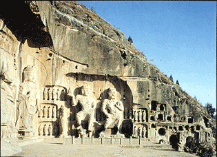

[Home] [Transportation] [Attraction] [Time] [Weather] [Maps] [Links]
Visit Luoyang, China
About the cityPopulation: 6.10 million Travel to Luoyang
HistoryLuoyang was captial of nine dynasties of accident city. To give fame to Luoyang are its many historic sites. Now luoyang is the second largest city in Henan province, after Zhengzhou, the capital. Read more...
|
|
Introduction
 Articles: "Luoyang" Microsoft® Encarta® Encyclopedia. http://encarta.msn.com © 1993-2001 Microsoft Corporation. All rights reserved.
Attractions
The Longmen Grottoes
(details) ArticlesGet to know
Luoyang |